끝나는 곳에서, 다음이 이어집니다
목차
브랜드
- 로고
- 아이콘
- 브랜드 색
- 로고를 쓸 때
부록
- 외부 API와 데이터 출처
차량 앱
- 로그인
- 차량 연결과 내 차량 정보
- 홈과 운행 시작
- 운행 중 화면
- 대기 기록과 대기 증빙
- 전자 인수증
- 배차 추천
- 오더 찾기와 실수익
- 장부
- 다른 앱 배차 등록
- 단골 주선사
- 설정
휴대폰 앱
- 가입
- 서류 올리기
- 내 정보
- 내 차량과 연비
- 오더 찾기와 조건
- 오더 상세와 실수익
- 배차 요청에서 확정까지
- 배차 추천 설정
- 나머지는 차량 앱 확인 뒤에 채워요
 목차
목차로고
이름
이에오는 '이어서', '이어짐'에서 왔어요. 짐을 내린 자리에서 다음 일이 이어진다는 뜻이고, '이어'를 로마자로 적으면 ieo예요.
텍스트 로고
소문자 ieo 뒤에 마침표까지가 로고예요. 글꼴은 Outfit ExtraBold이고, 글자 사이를 조금 좁혀서 한 덩어리로 읽히게 했어요.
문장 안에서는 한글로 이에오, 영문으로 Ieo라고 써요. 로고 모양 그대로 ieo.라고 쓰지 않아요.
밝은 바탕에는 주황 로고, 주황이나 어두운 바탕에는 흰 로고를 써요. 파일은 design/logo/wordmark에 있어요.
로고아이콘
막대 하나, 점 두 개
긴 막대는 지금 달리고 있는 운행이에요. 옆의 점 두 개는 그다음에 이어질 일이고, 멀수록 작게 그렸어요.
이름처럼 일이 끊기지 않고 이어지는 모습이에요. 짐을 내린 자리에서 빈 차로 돌아가지 않고 바로 다음 짐으로 넘어가게 돕는 게 이에오가 하는 일이라서요.
아이콘과 텍스트 로고는 붙여서 하나로 쓰지 않아요. 같이 놓아야 하면 떨어뜨려 따로 둬요.

 아이콘
아이콘주황은 이에오, 신호등은 운행 상황
로고와 가장 중요한 버튼에는 주황을 쓰고, 운행 상황을 알릴 때만 신호등 색을 써요. 운전 중에 한눈에 봐도 "누르는 곳"과 "지금 상태"가 섞이지 않게 하려는 거예요.
브랜드색
RGB 255 108 55 · CMYK 0 58 78 0
로고, 앱 아이콘, 시작 화면
#F25A22#C2410C#FFF3EE바탕과 글자
#FFFFFF#F2F4F6#191F28#4E5968#8B95A1상태색 (신호등)
#1D4ED8주행, 도착 예정 시각, 다음 배차 안내#A16207대기 타이머, 청구할 수 있는 대기비#15803D완료, 실수익, 받은 돈#B91C1C휴게 필요, 미수금, 지급 지연- 주황은 한 화면에 하나가장 중요한 동작 하나와 로고에만 써요.
- 상태색은 두 가지까지한 화면에 신호등 색이 많으면 아무것도 눈에 띄지 않아요.
- 색만으로 말하지 않기"대기 중"처럼 글자를 함께 써서 색약 기사님도 알아봐요.
- 대기는 노랑호박색은 주황과 헷갈려서 노랑으로 바꿨어요.
브랜드 색로고를 쓸 때
파일에 있는 모양과 색 그대로 써 주세요. 발표 자료나 홍보물을 만들다 보면 아래처럼 바꾸고 싶어지는데, 그러면 이에오로 안 보여요.
로고를 쓸 때가입은 휴대폰으로 해요
차 화면에서는 가입을 받지 않아요. 운전석에서 약관을 읽고 이름을 치는 건 불편하고 위험해서, 가입은 휴대폰 앱에서 끝내고 차에서는 로그인만 하게 했어요.


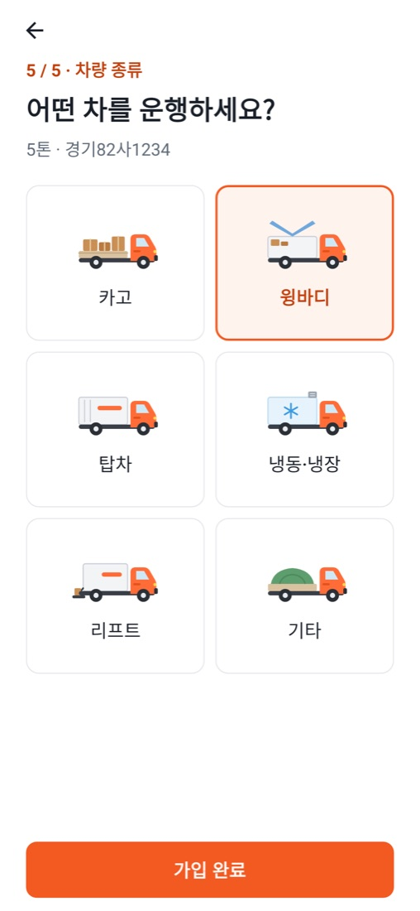
 계정과 차량 · 가입
계정과 차량 · 가입서류 네 장을 올리면
배차를 받을 수 있어요
아무나 가입해서 짐을 받아 가면 주선사가 이에오를 믿지 못해요. 그래서 사업자등록증, 자동차등록증, 운전면허증, 화물운송종사 자격증을 사진으로 받고, 운영자가 하나씩 확인해요.
- 확인 전에도 쓸 수 있는 것
운행 안내, 장부, 오더 구경. 오더는 시·구까지만 보이고 정확한 주소와 주선사 이름은 가려져요. - 반려되면
타일에 빨간 표시가 뜨고, 누르면 아래에 이유가 나와요. 사진만 다시 올리면 돼요. - 네 장이 모두 확인되면
이름 옆에 인증 차주 표시가 붙고, 그때부터 배차를 요청할 수 있어요.

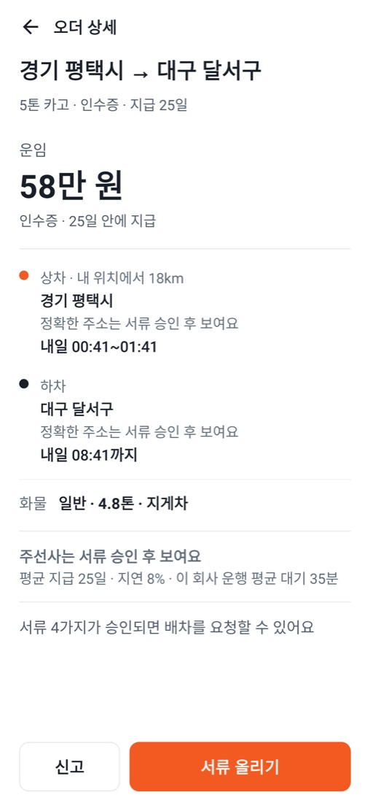
계정과 차량 · 서류내 정보
휴대폰 앱 내 정보에는 주선사가 나를 볼 때 보는 기록을 그대로 띄웠어요. 완료한 운행 수, 직전에 취소한 횟수, 단골 주선사 수예요.
- 번호를 바꾸려면 새 번호로 인증번호를 다시 받아야 해요. 다른 계정이 쓰는 번호면 거기서 막혀요.
- 이름은 그냥 고치고 저장하면 돼요.
- 차 화면에서는 이름만 고칠 수 있어요. 번호는 문자를 받아야 해서 휴대폰에서 바꿔요.

 계정과 차량 · 내 정보
계정과 차량 · 내 정보내 차량과 연비
차는 한 대만 등록해요. 번호, 톤수, 차종은 자동차등록증에 적힌 값이라 바꾸면 등록증을 다시 확인받을 때까지 배차 요청이 멈춰요. 높이나 폭 같은 제원은 언제든 고쳐도 돼요.
기름값을 계산할 때 연비는 이 순서로 찾아요.
| 톤 | 1 | 2.5 | 3.5 | 5 | 8 | 11 | 14 | 25 |
|---|---|---|---|---|---|---|---|---|
| km/L | 8.5 | 7.5 | 6.5 | 5.0 | 4.5 | 4.2 | 4.0 | 3.3 |
3.5톤이 넘는 화물차는 공인 연비가 없어서, 국토부가 2016년에 공개한 값과 업계 자료를 묶어 짐 실은 평균으로 잡았어요. 차 쪽 연비는 Pleos 차량에서만 읽혀요.
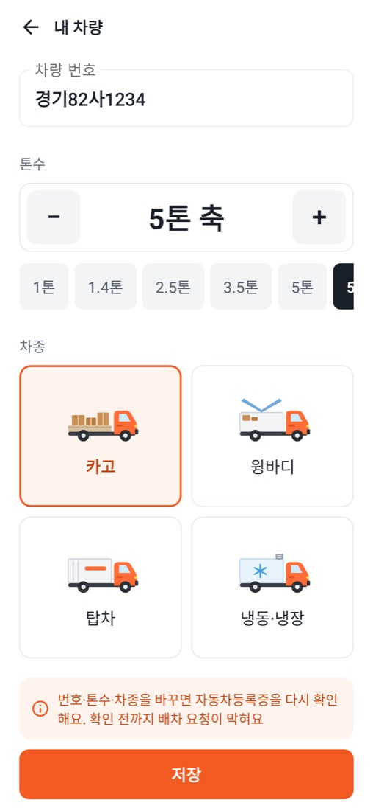
 계정과 차량 · 내 차량
계정과 차량 · 내 차량차에서는 QR 한 번이면 로그인돼요
차 화면에 뜬 QR을 휴대폰 카메라로 찍고, 휴대폰에서 승인을 누르면 끝이에요. 비밀번호는 따로 만들지 않아요.


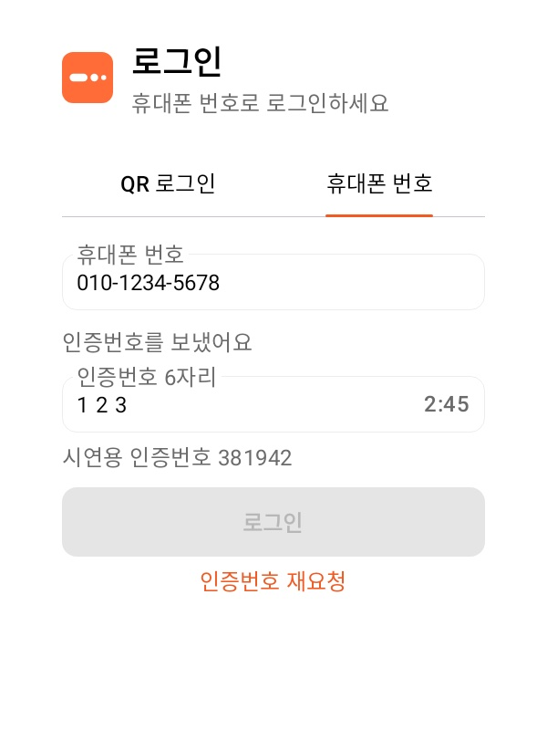
- 가입은 안 받아요가입하지 않은 번호면 휴대폰 앱에서 먼저 가입하라고 알려 줘요.
- 로그아웃하면 비워요다음 사람이 같은 차에 타도 앞 사람 화면이 남지 않아요.
- 어느 차에 들어왔는지 보여요휴대폰 내 정보의 로그인된 차량에서 확인하고 끊을 수 있어요.
계정과 차량 · 차량 로그인내 차로 실을 수 있는
오더만 보여요
주선사가 올린 오더 가운데 내 차의 톤수와 차종으로 실을 수 있는 것만 골라, 지금 있는 곳에서 가까운 50km 안을 먼저 보여 줘요.
- 상차지까지 약 15km
지도에서 잰 직선거리에 1.3을 곱한 도로 거리 어림이에요. 반경도 같은 값으로 걸러서, 50km를 골랐는데 60km가 섞여 나오는 일은 없어요. - 실수익 약 28만 원
운임에서 상차지까지 빈 차로 가는 길과 운송 구간의 기름값을 뺀 어림이에요. 통행료까지 뺀 정확한 금액은 상세에서 봐요. - 태그
차량은 남색, 선불은 청록, 인수증은 모래색이에요. 주선사 태그는 지급까지 평균 며칠 걸렸는지 보여 주고, 기록이 모자라면 '거래 기록 적음'이라고 써요. - 1분마다 새로 받아요
목록 위에 몇 분 전에 받았는지 나오고, 그사이 새로 올라온 오더에는 표시가 붙어요. 차에서는 달리는 동안 목록을 숨겨요.
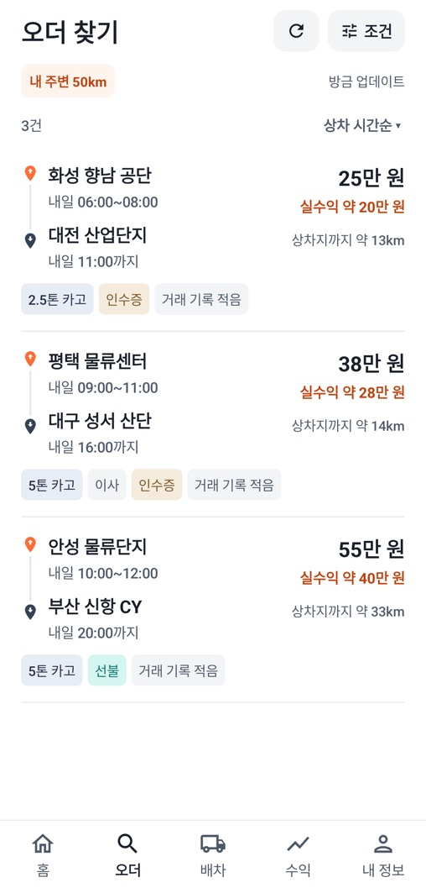
 배차 · 오더 찾기
배차 · 오더 찾기조건은 한 번에 고르고
건수를 보고 적용해요
[조건]을 누르면 거리, 상차 날짜, 최소 운임, 결제 방식, 제외할 화물을 한 창에서 골라요. 고르는 동안 아래 버튼에 '오더 3건 보기'처럼 결과 건수가 먼저 나와서, 0건이 되는 조건은 누르기 전에 알 수 있어요.
- 기본값 내 주변 50km, 나머지는 모두 전체예요. 바꾼 조건 수가 [조건] 버튼 옆에 숫자로 붙고, 목록 위에 '이사 제외'처럼 남아요.
- 제외할 화물은 배차 추천과 같이 써요 냉동·냉장, 이사, 위험물, 중량물, 장척물, 건자재, 농수산물, 폐기물 가운데 고른 것을 빼면, 차를 세웠을 때 받는 배차 추천에서도 빠져요. 추천 설정에서 바꿔도 여기에 그대로 들어와요.
- 정렬 상차 시간이 빠른 순과 운임이 높은 순을 눌러서 바꿔요.
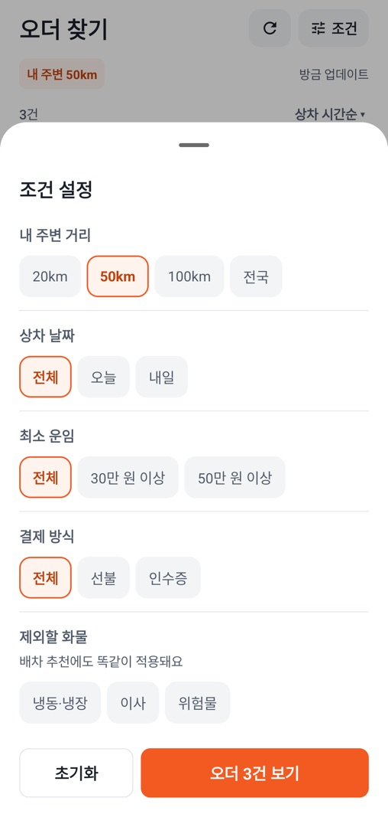
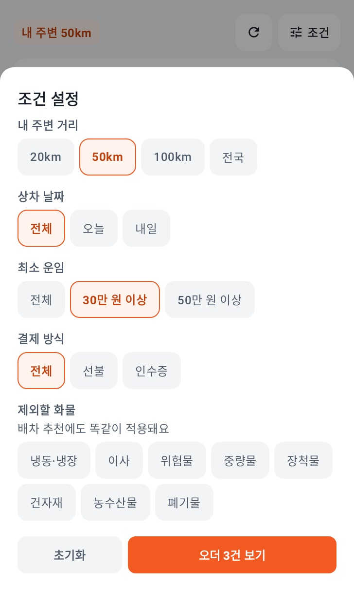
배차 · 조건상세에서 실제 길로
다시 계산해요
오더를 누르면 TMAP 화물차 경로로 지금 위치에서 상차지, 상차지에서 하차지까지를 다시 재요. 그 거리로 기름값과 통행료를 내서 운임에서 뺀 금액이 실수익이에요.
- 순서 운임 → 실수익과 그 내역 → 상차·하차 → 화물 → 주선사. 휴대폰과 차량이 같은 순서예요.
- 연비 차가 잰 연비, 기사님이 적은 연비, 톤수별 평균 순서로 찾아 기름값을 내요.
- 이 노선 평균 운임 같은 시·구끼리 오간 운행이 최근 90일에 10건 이상 끝났을 때만 보여요. 운임이 싼지 비싼지 견줘 볼 수 있어요.
- 현장 정보 상하차지 이름 아래를 누르면 다른 기사님들이 남긴 높이 제한, 지게차, 주차, 평균 대기를 볼 수 있어요.

 배차 · 상세와 실수익
배차 · 상세와 실수익요청하고 10분 안에 주선사가 고르면 배차가 잡혀요
같은 오더에 여러 기사님이 요청할 수 있고, 주선사는 요청한 사람들의 완료 운행 수와 직전 취소 횟수를 보고 한 명을 골라요. 바로 확정되는 오더는 요청하자마자 배차가 잡혀요.


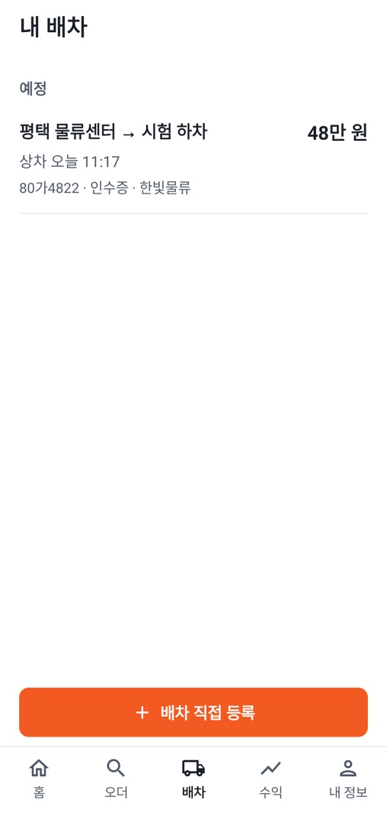
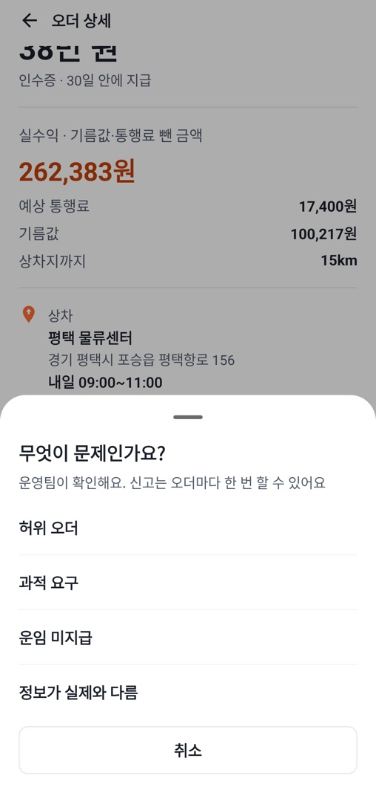
- 10분이 지나면 만료확정되지 않은 요청은 끝나고, 같은 오더를 다시 요청할 수 있어요. 철회한 오더도 마찬가지예요.
- 한 번에 세 건까지기다리는 요청은 세 건까지 걸어 둘 수 있어요. 1분 안에 다섯 번 넘게 누르면 잠깐 막혀요.
- 확정 뒤 취소하면 끝배차를 받고 취소한 오더는 같은 기사님이 다시 요청할 수 없어요.
- 신고는 한 번오더마다 한 번만 받아요. 신고한 오더는 버튼이 '신고함'으로 바뀌고 운영팀이 확인해요.
배차 · 요청에서 확정까지차를 세우면 근처에서
돈 되는 3건을 보여 줘요
기어를 P에 두거나 주차 브레이크를 채우는 순간, 세운 자리 근처 오더 가운데 실수익이 높은 3건을 골라 가운데 창에 하나씩 띄워요. 운행 전이든, 상차지·하차지에서 기다리든, 휴게소든 같아요.
- 15초씩 차례로
1등이 15초 동안 떠 있다가 [넘기기]를 누르거나 시간이 지나면 2등, 3등으로 넘어가요. 넘긴 것은 기록하지 않아요. - 홈에 카드로 남아요
창이 지나가도 홈의 '근처 추천'에 3건이 남아요. 차에서 내렸다 돌아와 눌러 봐도 돼요. 출발하면 지우고, 다음에 세우면 그 자리 근처로 다시 받아요. - 무엇을 고르나
세운 곳에서 30km(설정) 안, 내 차에 실을 수 있고 제외한 화물이 아니며 이미 요청해 둔 오더가 아닌 것. 어림으로 10건을 고른 뒤 TMAP 화물차 경로로 기름값·통행료를 다시 내서 3건을 골라요. - 요청은 기사님이
[배차 요청]을 눌러야 주선사에게 가요. 이 요청에는 '추천에서 눌렀음'이 남아, 추천이 얼마나 쓰이는지 볼 수 있어요. 달리는 동안에는 띄우지 않고 음성으로 말을 걸지도 않아요.

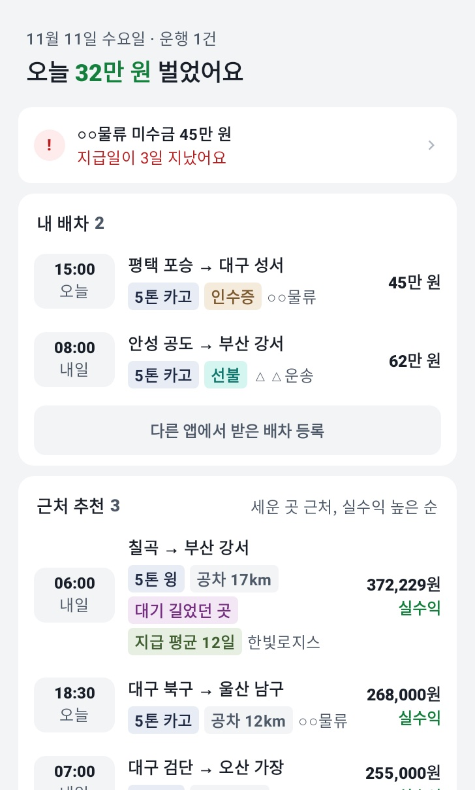
배차 추천추천 설정은 휴대폰과
차에서 같이 바꿔요
휴대폰 [내 정보 → 배차 추천]이나 차량 [설정 → 배차 추천]에서 바꾸면 서버에 하나로 저장돼, 다음에 차를 세울 때부터 바로 적용돼요.
- 추천 받기 스위치로 켜고 꺼요. 끄면 차를 세워도 추천 창이 뜨지 않아요.
- 찾는 범위 세운 곳에서 5km부터 100km까지, 5km씩 늘리고 줄여요. 기본은 30km예요. 넓히면 후보가 늘지만 빈 차로 가는 길도 길어져요.
- 최소 실수익 고른 금액보다 실수익이 적은 오더는 추천하지 않아요.
- 제외할 화물 냉동·냉장, 이사, 위험물, 중량물, 장척물, 건자재, 농수산물, 폐기물 가운데 여러 개를 골라요. 오더 찾기 조건과 같은 설정이에요.

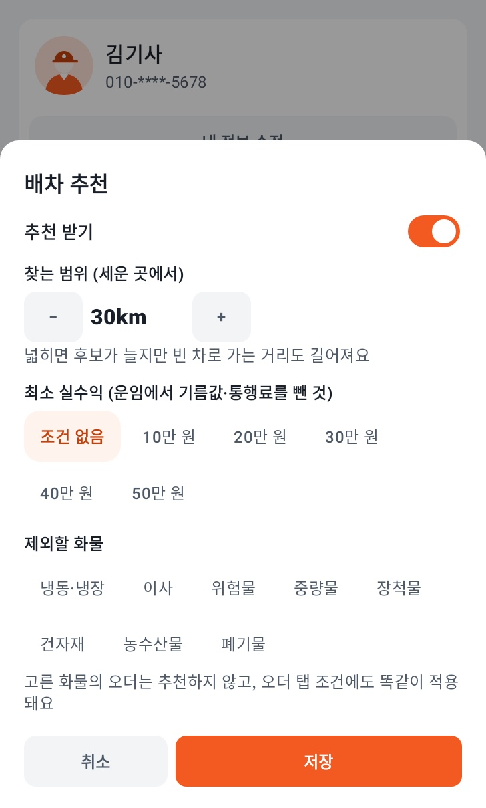
배차 추천 · 설정이에오가 쓰는 외부 API와 데이터
키는 모두 서버에만 두고, 비어 있으면 그 기능만 대신하는 값으로 돌아가요. 공공데이터는 출처를 밝혀야 해서 앱의 데이터 출처에 함께 적어요.
| API·데이터 | 어디에 쓰나 | 제공 | 키 (서버 환경변수) | 지킬 것 |
|---|---|---|---|---|
| 길·돈 | ||||
| TMAP 화물차 경로 | 배차 추천과 오더 상세의 실수익: 빈 차 거리, 운송 거리, 통행료 | SK텔레콤 TMAP | TMAP_APP_KEY | 결과는 24시간까지만 들고 있어요. 못 받으면 직선거리 어림 |
| 오피넷 유가 | 시도별 경유 평균 가격으로 기름값 계산 | 한국석유공사 | OPINET_API_KEY | 못 받으면 1L 1,600원 |
| 카카오 로컬 | 상하차지 주소를 좌표로 바꾸기 | 카카오 | KAKAO_REST_API_KEY | 서버에서만 불러요 |
| 휴게 | ||||
| 도로공사 노선별 휴게시설 현황 | 휴게소 편의시설(수면실·샤워실·세탁실), 화물 휴게소 여부 | 한국도로공사 (data.ex.co.kr) | EX_API_KEY | 매주 월요일 새벽 4시에 받아 저장 |
| 전국휴게소정보표준데이터 | 휴게소 좌표와 상행·하행 | 공공데이터포털 (data.go.kr) | DATA_GO_KR_KEY | 저작자표시. 출처를 밝혀요 |
| 계정·심사·음성 | ||||
| 카카오·구글 로그인 | 주선사 콘솔 소셜 로그인 | 카카오, Google | KAKAO_REST_API_KEY 등 | 키가 없으면 '준비 중' |
| 국세청 사업자등록 진위확인 | 주선사 사업자등록증 심사 | 국세청 (공공데이터포털) | NTS_SERVICE_KEY | 키가 없으면 건너뛰고 사람이 심사 |
| OpenRouter (typesafe/jev-1.14) | 음성 대답이 '예'인지 '아니오'인지 판별 | OpenRouter | OPENROUTER_API_KEY | 단어 목록으로 못 알아들은 말만 보내고, 대답을 저장하지 않아요 |
| 차량 (Pleos SDK, 차 안에서만) | ||||
| NaviHelper · Vehicle · STT · TTS | 길 안내 요청과 남은 거리·시간, 속도·기어·주차 브레이크·연비, 음성 듣기·말하기 | 현대자동차 Pleos | 앱 권한 | 출시 전 CAR_INFO, CAR_ENERGY 권한 신청 확인 |
데이터 출처 표시: 휴게소 정보 — 공공데이터포털 전국휴게소정보표준데이터, 한국도로공사 고속도로 공공데이터 포털 · 유가 — 한국석유공사 오피넷 · 경로·통행료 — TMAP. 문자 발송 업체는 아직 정하지 않아 서버 기록에만 남아요.
부록 · 외부 API와 데이터 출처